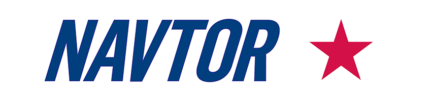

Utdanning & Erfaring
Jeg er en digital markedsfører som bestemte meg for å lære litt om HTML for å få bedre forståelse for søkemotoroptimalisering (SEO). Dette ga mersmak og førte til at jeg fordypet meg mer i dette for å få grunnleggende innsikt og forståelse for teknologien og kodene som jobber bak kulissene til enhver nettside.
Utdanning
Fra 2007-2010 studerte jeg Internasjonal Markedsføring. Studiet ble gjennomført med to år i Norge på BI Bergen og ett år ved Nanyang Technological University i Singapore, hvor jeg fullførte Bachelorgraden. Her fikk jeg fordypet meg i mange teoretiske aspekter rundt markedsføringsfaget, og gjennom utenlandsoppholdet fikk jeg i tillegg en internasjonal dimensjon med fordypning i kulturforståelser og mekanismene i internasjonal handel.
2017 - d. d.:
Markeds- og kommunikasjonsansvarlig

Når det kommer til digitale sjøkart og maritim e-navigasjon, er NAVTOR verdensledende på teknologi. Under slagordet og misjonen «e-Navigation made easy» har de siden oppstarten i 2011 blitt anerkjent som selskapet som tilbyr de mest intuitive software-løsningene for å distribuere og oppdatere kartene om bord på skip. Selskapet bruker også digital teknologi til å forenkle hverdagen til både mannskapet om bord og ledelse og administrasjon på land.
Som ansvarlig for markedsføring og kommunikasjon har jeg jobbet tett med salg og support for å støtte opp under aktivitetene til selskapets hovedkontor i Egersund og fem salgskontor i Singapore, Japan, Sverige, Storbritannia og USA. På et mer overordnet nivå har jeg redesignet firmaets merkevare, sørget for at vi får ut månedlige pressemeldinger og bygget opp en digital tilstedeværelse, som har resultert i en jevn strøm av henvendelser på firmaets nettside.
I tillegg til å støtte salg og support har jeg vært så heldig å få jobbe med flinke utviklere for å innarbeide markedsføringen og firmaets merkevare i tjenestene firmaet utvikler. Dette har uten tvil gitt meg en ekstra dimensjon med tanke på teknologisk forståelse.
2011-2016:
Markedskoordinator Norge-Danmark
Fjord Line er i dag Norges nest største fergerederi i internasjonal passasjer- og godstrafikk mellom Norge, Sverige og Danmark. Da jeg begynte i rederiet var det derimot den minste aktøren i markedet. I løpet av fem år fikk jeg være med på en eventyrlig vekst og derigjennom opparbeidet meg solid kompetanse innenfor digital markedsføring og markedsføring mot forbrukere. Som en reiselivsbedrift i en digital verden var markedsføring på nett den aller viktigste aktiviteten for å fylle skipene, og det bød på et mangfold av varierte oppgaver for å konvertere flest mulig av nettsidens besøkende til reisende passasjerer.
Etter hvert som rederiet vokste fikk jeg stadig større ansvar i markedsavdelingen. De siste to årene hadde jeg ansvaret for markedsføringen for alle fergerutene mellom Norge og Danmark, i tillegg til den nyetablerte innenriksruten mellom Stavanger og Bergen. Jeg var ansvarlig for å planlegge kampanjer og aktiviteter og koordinere gjennomføringen av disse. Stillingen fungerte som et bindeledd mellom interne og eksterne ressurser som måtte dra i samme retning for å oppnå målene rederiet hadde satt seg. Dette var utrolig givende da jeg fikk jobbe tett sammen med grafisk designere, content-skribenter og performance/SEO spesialister, samt eksterne partnere som reklame- video- og mediebyrå etc m. m.